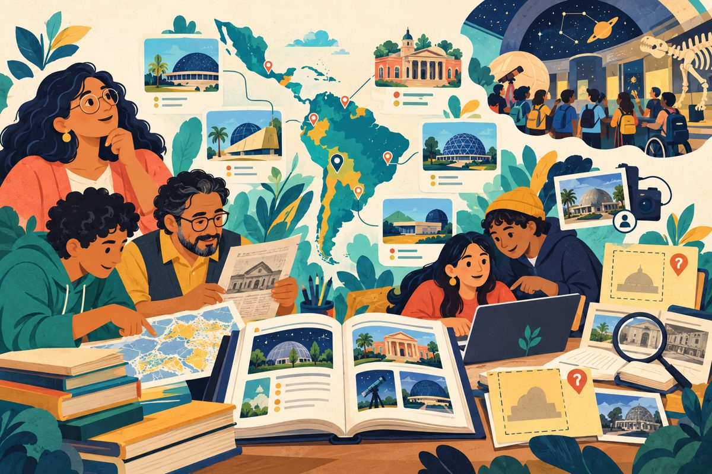
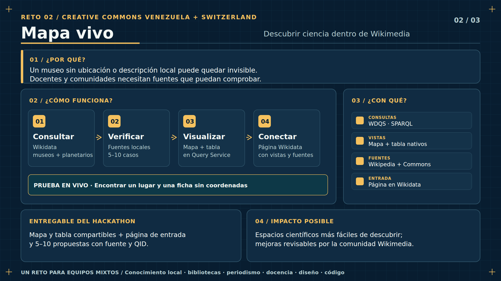

Reto 02 · Hackathon CoAfina 2026
Mapa vivo
Descubrir y mejorar espacios educativos dentro de Wikimedia
Arturo Sánchez y Diego Flores
Creative Commons Venezuela y Creative Commons Switzerland

El reto en una frase
Museos de ciencias y planetarios en un mapa de Wikidata, con lo que falta a la vista
El equipo elige un país o una zona, consulta Wikidata y crea un mapa y una tabla; los lugares sin coordenadas siguen en la tabla. Después propone entre 5 y 10 mejoras, cada una con su QID, una fuente independiente y su justificación.
* QID: el identificador único de cada ficha de Wikidata, por ejemplo Q588140 para «museo de ciencias».
Qué buscamos
Objetivos
Hacer más fáciles de descubrir los museos de ciencias y planetarios de una región y dejar mejoras verificables para la comunidad Wikimedia.
Consultar
Mapa y tabla con Wikidata Query Service para una zona acotada.
Verificar
Comparar con catálogos y fuentes locales para hallar lo que falta.
Proponer
De 5 a 10 mejoras con QID, fuente y justificación.
Qué se entrega
El producto
Se valora la calidad de cada propuesta, con ediciones hechas a mano y revisadas.
El problema, en pequeño
Lo que la consulta encuentra
Ejemplo ilustrativo con lugares inventados. El reto consiste en encontrar los «Museo C» reales de una zona y proponer la mejora con su fuente.
Para empezar
Una consulta de partida
Museos de ciencias de un país, en un mapa. Los que no tienen coordenadas siguen en la tabla.
Cambia Q717 (Venezuela) por tu país o tu zona, y añade los planetarios.
#defaultView:Map SELECT ?lugar ?lugarLabel ?coord WHERE { # museo de ciencias y sus subclases ?lugar wdt:P31/wdt:P279* wd:Q588140 . # país: Venezuela ?lugar wdt:P17 wd:Q717 . # coordenadas, si las tiene OPTIONAL { ?lugar wdt:P625 ?coord } SERVICE wikibase:label { bd:serviceParam wikibase:language "es,en". } }
El marco de orientación · Beat Estermann
¿Cuánto falta por descubrir?
La visión del WikiProject Heritage institutions: la base de datos más completa y de mejor calidad del mundo sobre archivos, museos, bibliotecas e instituciones similares.
Cifras estimadas por Beat Estermann en su marco de orientación para este reto.
El marco de orientación · Beat Estermann
Lo que cada ficha de museo debería tener
- ✓PaísCon él se pueden hacer estadísticas y tablas de seguimiento.
- ✓Etiqueta y descripciónEn el idioma local y en inglés.
- ✓Entidad territorialMunicipio y estado, o su equivalente.
- ✓Dirección y coordenadasPara ubicarlo en un mapa.
- ✓Tipo de museoSu área temática: lo que permite hacer listas y mapas como los de este reto.
Elige tu país o tu región y mira cuántas fichas lo cumplen.
El marco de orientación · Beat Estermann
Más ideas para el hackatón
Datos que ya existen
Verifica si las bases de datos públicas o del sector de tu país ya están en Wikidata.
Clases bien definidas
Revisa las clases de museos de historia natural y de ciencia y tecnología: definiciones correctas y alineadas entre idiomas.
Cobertura
Elabora estadísticas del censo de museos en países del Sur Global: los datos existen, falta analizarlos.
Mantenimiento
Analiza qué fichas de tu región necesitan actualizaciones periódicas y si hoy se hacen.
Uso
Identifica aplicaciones que usen estos datos y puedan atraer a nuevos usuarios.
Comunidad
Documenta tu propia experiencia: tus dudas, lo que encontraste y cómo mejorar la documentación.
Tomado del marco de orientación de Beat Estermann para el reto 2.
Con qué se trabaja
Los datos
Museos de ciencias y planetarios: nombre, coordenadas y sitio web.
CC0JSON o CSVWikiProject Heritage institutionswikidata.org/wiki/Wikidata:WikiProject_Heritage_institutions ↗La comunidad que cuida estas fichas; a ella va la nota de hallazgos.
CC0Página de WikidataWikiProject Museumswikidata.org/wiki/Wikidata:WikiProject_Museums ↗Cómo describir un museo en Wikidata: propiedades y reglas de uso.
CC0Página de WikidataWikimedia Commons (opcional)commons.wikimedia.org ↗Imágenes de los lugares, cada una con su licencia.
La de cada archivoJPG o PNGLos artículos de Wikipedia se enlazan desde sus fichas, sin copiar su texto.
Cómo se valora
Criterios
- Vista abiertaMapa y tabla accesibles, con los lugares sin coordenadas visibles.
- UtilidadUn docente o estudiante encuentra un espacio y entiende sus datos.
- PropuestasDe 5 a 10 mejoras con QID, observación y fuente independiente.
- Licencias y reproducciónImágenes con atribución; fecha y consulta documentadas.
- Trabajo conjuntoVerificación, educación, diseño e implementación, con una prueba breve.
El reto en una hoja

Para quién es
Hay un lugar para ti
El reto necesita más que programación. Estos perfiles tienen trabajo desde el primer día:
Contacto: Arturo Sánchez y Diego Flores · en Discord: artfisica (Arturo)
Reto 02 · Mapa vivo
¡Gracias!
¿Preguntas? En Discord: artfisica
![Código QR que lleva a laconga.redclara.net/hackathon]() laconga.redclara.net/hackathon
laconga.redclara.net/hackathon